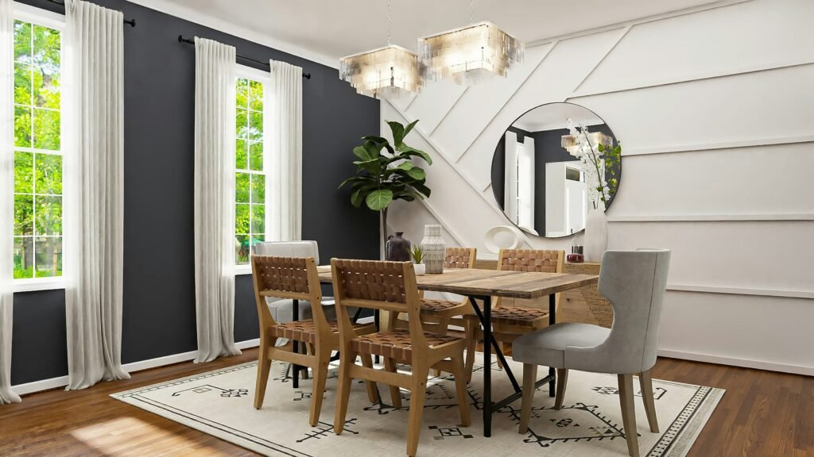
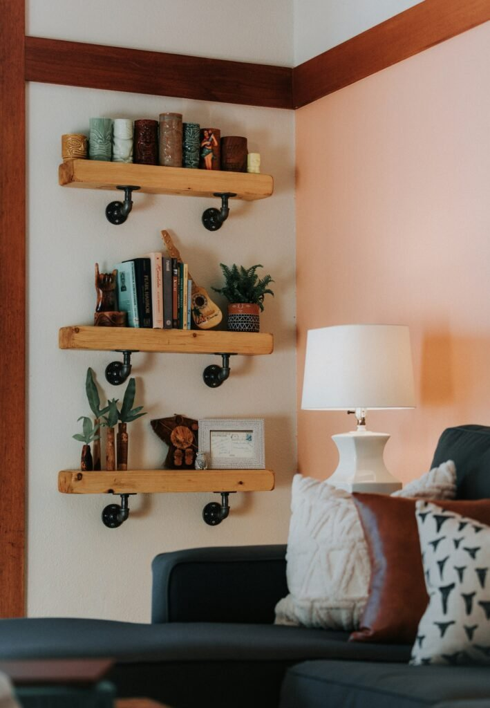
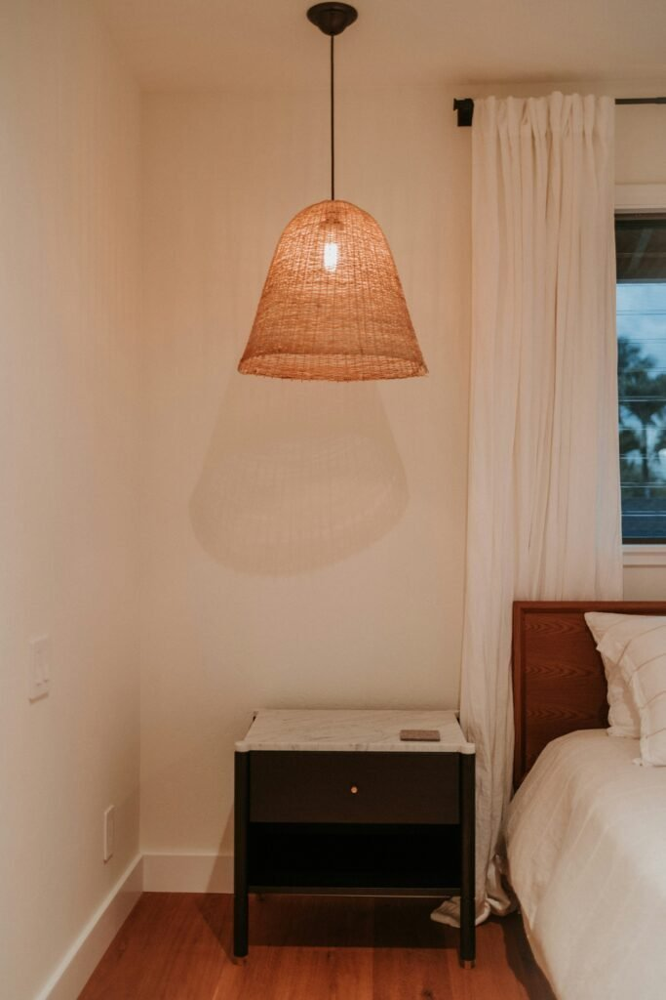
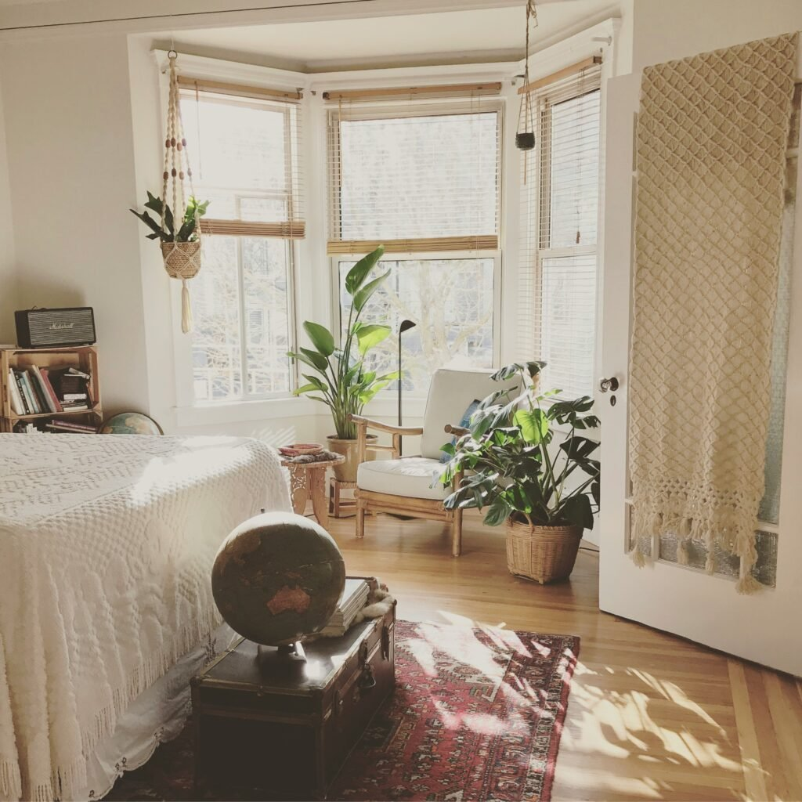
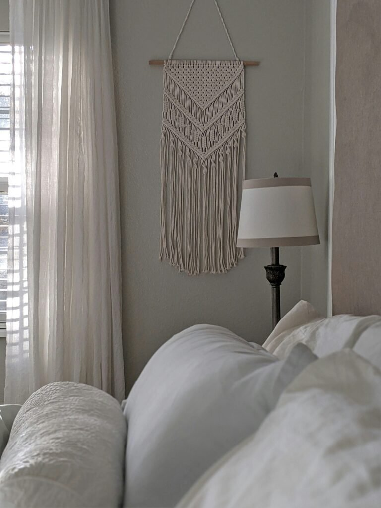
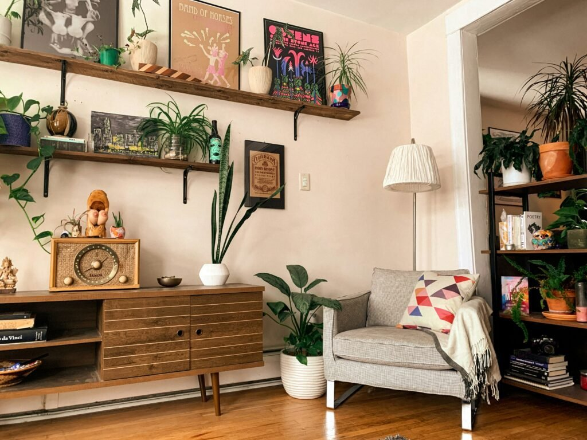
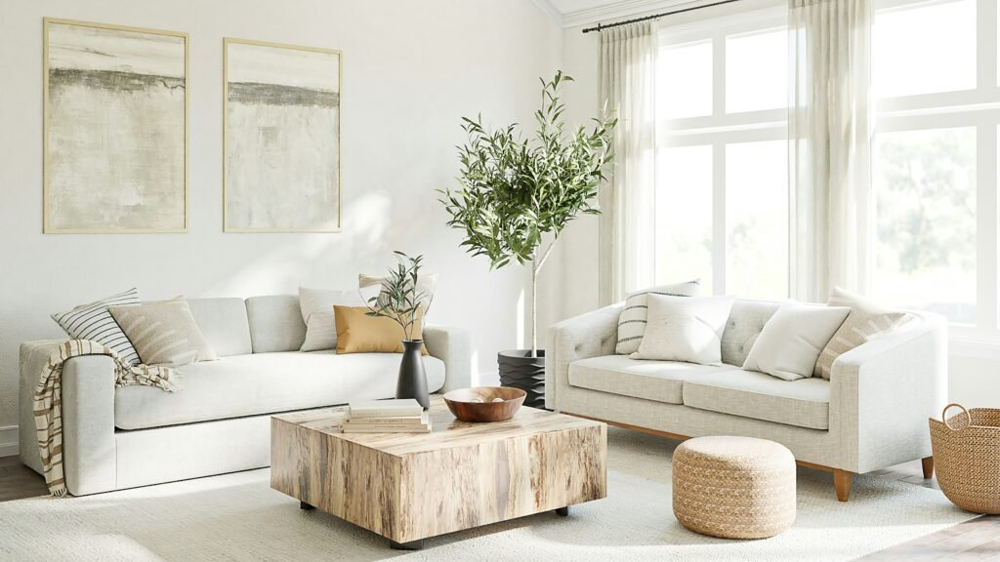
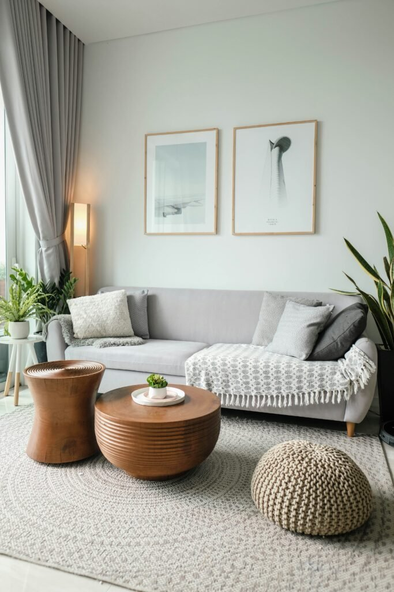
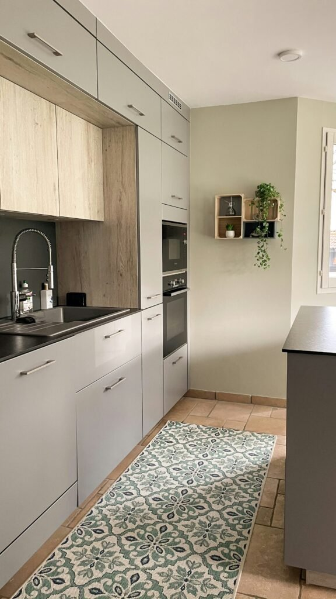
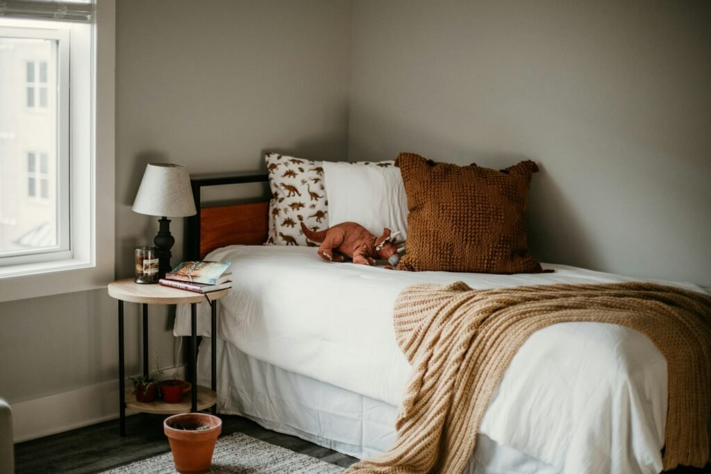

Boho and farmhouse shouldn't work together on paper.
One is calm and structured. The other is loose and layered.
Put together carelessly, a room ends up looking like two completely different people decorated it. Put together with the right principles, it reads as one of the most genuinely effortless looks in home design.

Boho Flat Woven Wall Basket Decor, Set of 8
Shop on AmazonWhy This Combination Keeps Coming Back
A pure farmhouse room can tip into feeling a little sterile once the novelty wears off.
A pure boho room can tip into feeling cluttered without something grounding it.
Together, each style corrects the other's weak spot, which is the real reason the combination has staying power instead of fading as a passing trend.

What the Blend Actually Means
Farmhouse brings the bones: natural wood, worn textures, a calm neutral base.
Boho brings the personality: layered textiles, global accents, a looseness that keeps the room from feeling too tidy.
Neither style on its own produces this look. It only shows up where the two actually meet.

1. Imperfection Is the Point
A wobbly handmade ceramic, a visibly worn rug, an intentionally uneven shelf, this style treats imperfection as a feature, not something to hide.
This wabi-sabi-adjacent instinct is part of what keeps the look from feeling overly polished or showroom-staged.
Chasing perfect symmetry actually works against this particular style more than almost any other one out there.
2. Build for Flow, Not Just Individual Rooms
A boho farmhouse home works best when the palette and material logic carries from room to room, even if each space has its own character.
A consistent wood tone or a recurring textile choice throughout the house does more for cohesion than any single room's styling could on its own.
This is what separates a whole-home aesthetic from a single well-styled room surrounded by mismatched ones.
3. Let Rugs Anchor the Whole Room
A natural-fiber rug, jute, sisal, a vintage Turkish piece, grounds the floor the same way the neutral wall color grounds the room.
Layering a smaller patterned rug over a larger neutral one adds boho's texture without overwhelming farmhouse's calm base.
The floor genuinely deserves as much consideration as the walls do in this style, not an afterthought.
4. Keep the Lighting Warm, Not Bright
A rattan pendant, a cluster of warm-toned lamps, or a few candles do more for this style's mood than any single bright overhead fixture.
Warm, layered lighting pulls the neutral base and the boho texture together into one cohesive feeling rather than two separate design choices sharing a room.
This detail is easy to skip and genuinely changes how the whole room reads.



5. Treat Plants as Non-Negotiable
A boho farmhouse room without greenery feels noticeably incomplete, more than almost any other style would.
A mix of trailing and structural plants, displayed in natural-material planters, does more to finish the look than another round of accessories would.
This is one of the cheapest, lowest-risk ways to add life to the room.


6. Let Walls Carry Texture, Not Just Color
Exposed wood beams, a woven wall hanging, a gallery of mismatched frames, walls in this style do more than hold paint color.
Texture on the walls matters as much as texture on the floor or furniture, which is easy to forget in a style this layered.
A single textured piece often makes more impact than several flat framed prints combined.



7. Accessorize Like It Happened Naturally
The best boho farmhouse rooms look collected over years, not purchased in one trip.
A handwoven basket, a vintage ceramic, a thrifted frame, accessories that feel found rather than matched are what make the look read as effortless instead of staged.
Resisting the urge to buy a full matching accessory set is the single biggest thing that keeps this style from looking generic.

Large Willow Wicker Basket with Handle, 16 Inch
Shop on Amazon8. Choose Furniture That Can Do Both
A solid wood farmhouse table or a weathered dresser provides the structure. A rattan chair, a woven bench, or a vintage rug softens it.
The strongest pieces in this style are usually old, reclaimed, or deliberately imperfect. That imperfection is part of what sells the look.
One standout furniture piece per room tends to work better than several competing for attention.

Rattan Table Lamp, Stepless Dimmable
Shop on Amazon



9. Mix Materials on Purpose
Raw wood, woven rattan, soft linen, a bit of metal, the material mix is where boho farmhouse actually lives.
Each material should feel intentional rather than randomly scattered. Two or three recurring textures throughout the room read as cohesive; eight different ones in a single space read as cluttered.
Texture is doing most of the work that color would do in a different style.

10. Start From a Neutral Base
The walls, floors, and biggest furniture pieces should stay in farmhouse's calm, neutral territory: whites, warm woods, soft greiges.
This is the foundation everything boho gets layered onto. Skipping it and starting with pattern and color everywhere is the fastest way to end up with visual chaos instead of a considered room.
Get the base right first, before a single boho accent enters the room.

PRESTIGE Paints Interior Paint and Primer In One, 1-Gallon, Eggshell
Shop on AmazonTake It Outside Too
A covered porch or patio handles this style just as well as an interior room. Weathered wood furniture, woven outdoor textiles, and a few hardy plants translate the same principles outdoors.
This extends the home's overall cohesion past just the indoor rooms.
The Mistakes That Undercut the Look
Buying a fully matched furniture or accessory set defeats the collected-over-time feeling this style depends on.
Too many competing patterns in one room reads as cluttered rather than layered.
Skipping the neutral foundation and leading with boho accents first is by far the most common reason this whole combination falls apart.
None of This Needs a Renovation
None of these principles require a full renovation to apply.
Start with the neutral base, layer in two or three recurring textures, and resist the matched-set instinct.
Done right, the room ends up feeling genuinely warm, properly collected, and unmistakably lived-in, which is the whole point of the style in the first place.